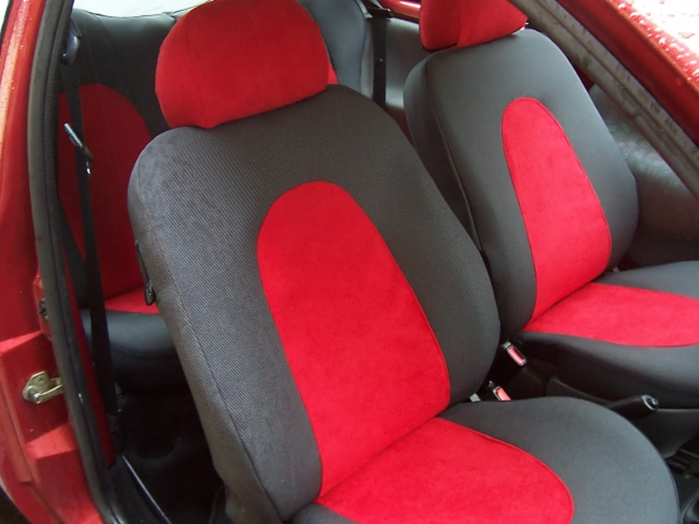
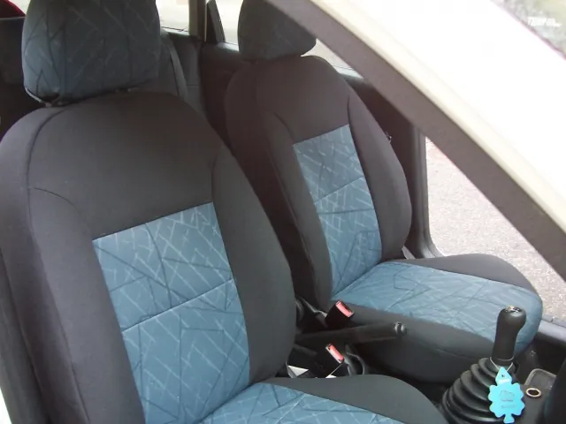
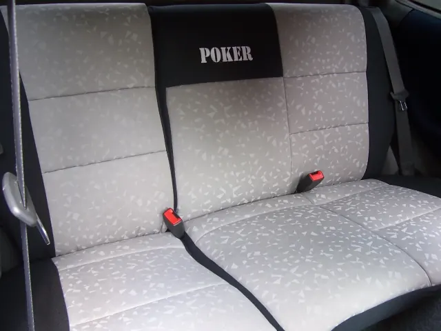
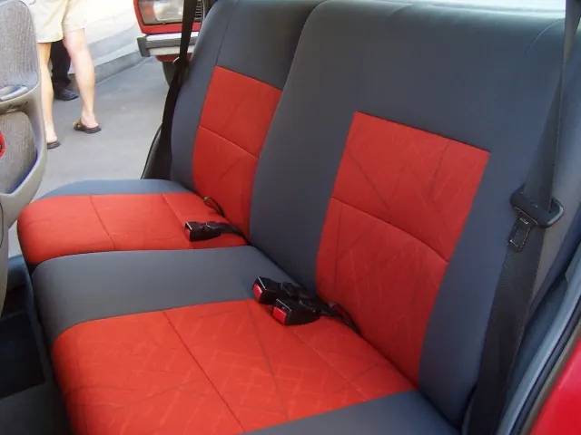

4,7 (83 Google-vélemény)
Méretre szabott, egyedi üléshuzat Pécsen
Eredeti autókárpit anyagból varrunk huzatot bármilyen autó üléseire, és gyerekülést is áthúzunk. Válasszon a szövetmintáinkból, a többit bízza ránk.
Amit vállalunk
A Kincses Car-Pitt Kft. családi vállalkozás Pécsen. Nálunk kizárólag eredeti autókárpit anyagból készült, szigorúan méretpontos huzatot talál.
Egyedi üléshuzat
Az Ön autójának üléseire szabjuk: számolunk a könyöktámasszal, az oldallégzsákkal, az osztott hátsó támlával és a fejtámlák formájával is.


Hímzés
Logót vagy feliratot hímzünk a huzatra, az Ön által választott színnel. Céges autóknál és egyedi kéréseknél is jól jön.
Gyerekülés áthúzása
A kopott vagy foltos gyerekülést új anyaggal húzzuk át, így nem kell újat venni csak azért, mert a huzata elhasználódott.
Márkakereskedések partnere
Több márkakereskedéssel és márkaszervizzel dolgozunk együtt: huzataink megfelelnek a magas elvárásaiknak.

Méretre szabva: mire figyelünk
Egy saját munkánk, a hátsó üléspad. A huzat nem takarja el, ami az üléshez tartozik.
- Övcsatok. A huzat kivágást kap a csatoknak, így az öv ugyanúgy bekapcsolható.
- Biztonsági öv kivágás. Ahol az öv az ülésen fut át, ott is ki van vágva.
- Osztott támla. Ha a hátsó támla osztott, a huzat is osztott, és a támla továbbra is ledönthető.
Az ajánlatnál ezért kérdezzük az ülések kialakítását is: könyöktámasz, oldallégzsák, fejtámla-típus, gyerekülés-rögzítés.
Rakja össze a huzatát
Az ülés széle és közepe külön anyagot kap. Kattintson egy külső és egy belső szövetre, és nézze meg, hogyan mutat együtt. A mintákat a műhelyben élőben is megfoghatja.
Külső szövetek
Az ülés szélére és oldalára. Húzza oldalra a további mintákért.
Belső szövetek
Az ülés közepére, a háttámlára és a fejtámlára. Szabadon párosítható bármelyik külső anyaggal. 32 minta, húzza oldalra.
Így készül az új huzat
Anyagot választ
Itt az oldalon vagy a műhelyben, a szövetminták közül. Az anyagok párosításában is segítünk.
Ajánlatot kér
Megadja az autó típusát, évjáratát és az ülések kialakítását, mi pedig ajánlatot küldünk.
Méretre elkészítjük
A huzat az Ön autójának üléseire készül, a megbeszéltek szerint és a megbeszélt határidőre.
Munkáink
Bármilyen típusú autóra vállalunk kárpitozást. Kattintson a képekre a nagyobb nézethez.
- BMW
- Nissan
- Opel
- Ford
- Volkswagen
- Citroën
- Fiat
- Audi
- és még számtalan más autó
Amit az ügyfeleink mondanak
83 vélemény a Google-on
„Nagyon szép és méretben tökéletes lett az autó üléshuzat! A megbeszéltek szerint lett elkészítve és a beígért időre! Rengeteg szövet közül lehet választani!”
„Segítőkészség, kedvesség, pontos precíz munka. Ha ilyen jellegű gondom van, csak őket keresem. Szívből ajánlom!”
„Többször készítettek már nekem üléshuzatot! Szép kidolgozás, viszonylag nagy a színválaszték! Nagyon készségesek!”
Gyakori kérdések
Nem találja a választ? Hívjon minket hétköznap 8 és 17 óra között.
Milyen anyagból készül az üléshuzat?
Kizárólag eredeti autókárpit anyagból. Az ülés szélére és közepére külön anyagot választhat, a külső és a belső szövetek szabadon párosíthatók.
Milyen autóra tudnak üléshuzatot készíteni?
Bármilyen típusra. Készítettünk már huzatot többek között BMW, Nissan, Opel, Ford, Volkswagen, Citroën, Fiat és Audi autókra. A huzat az adott autó üléseire, méretpontosan készül.
Gyerekülést is áthúznak?
Igen, a gyerekülések áthúzását is vállaljuk.
Lehet logót vagy feliratot hímezni a huzatra?
Igen. Ajánlatkéréskor jelezze, hogy logót vagy feliratot szeretne, és írja le, mit és milyen színnel.
Mennyibe kerül egy üléshuzat?
Az ár az autó típusától, az ülések kialakításától és a választott anyagtól függ. Küldje el az autó adatait az ajánlatkérőben, vagy hívjon minket.
Mikor vannak nyitva, és hol találom a műhelyt?
Hétfőtől péntekig 8 és 17 óra között, Pécsen, a Siklósi út 2. alatt. Hétvégén zárva vagyunk. Üzenetre legfeljebb 2 munkanapon belül válaszolunk.
Új huzat, ami pontosan illik az üléseire
Hívjon, vagy küldje el az autó adatait, és ajánlatot adunk. Hétköznap 8 és 17 óra között a műhelyben is megnézheti a szöveteket.
Kapcsolat
- Cím
- 7622 Pécs, Siklósi út 2.
- Mobil
- 06 30 520 7309
- Telefon
- 06 72 227 676
- kiki2007@t-online.hu
- Nyitvatartás
- Hétfő–péntek 8–17 óra
Szombat, vasárnap zárva